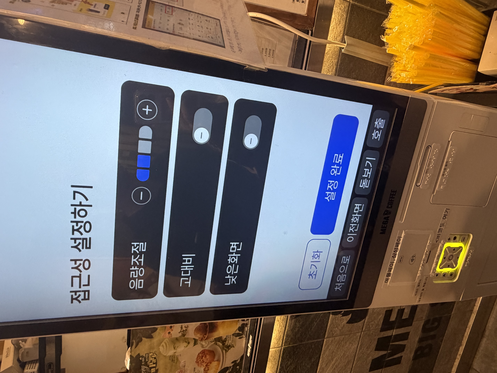
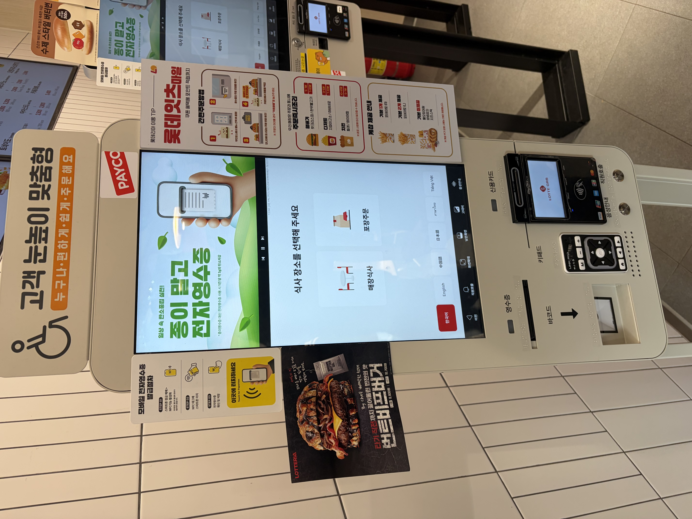
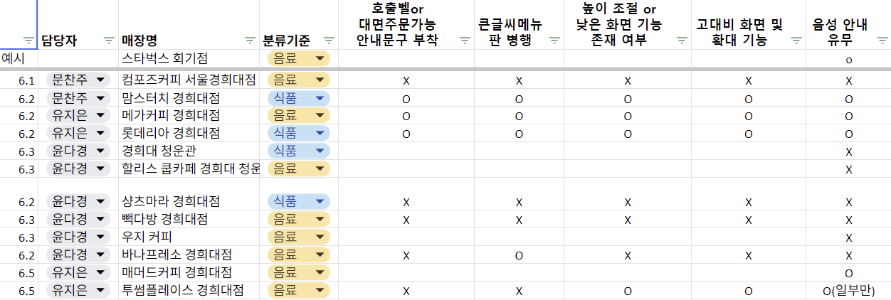

경희대학교 인근 키오스크 접근성 실태조사
형식적 접근성 준수와 실제 사용성 사이의 간극
“시각장애인 70%는 키오스크보다 직원에게 주문하는 것을 더 선호했다.”
중앙일보 · 2025
키오스크는 인건비 절감과 주문 처리의 효율화를 주요 장점으로 내세우며 식음료 매장을 비롯한 다양한 서비스 산업에서 빠르게 확산되어 왔다.
점주 입장에서는 직원 고용에 비해 운영 비용을 절감할 수 있고, 주문 누락이나 의사소통 오류를 줄일 수 있다는 점에서 키오스크 도입은 합리적인 경영 전략으로 간주되어
왔다.
그러나 이러한 효율성 중심의 기술 도입은 모든 이용자에게 동일한 편의를 제공하지 못하며, 결과적으로 일부 이용자를 배제하는 한계를 만들어낸다.
특히 디지털 기기에 익숙하지 않은 고령층은 복잡한 화면 구성과 빠른 조작 절차 앞에서 심리적 부담을 느껴 주문을 포기하거나 타인의 도움에 의존하는 상황에 놓이기도 한다. 이는 단순히 개인의 '서투름'이나 적응 부족의 문제가 아니라, 키오스크 시스템 자체가 다양한 이용자의 신체적·인지적 조건을 충분히 고려하지 못한 결과이다.
예를 들어 시각장애인에게는 음성 안내나 촉각적 조작 수단의 부재가 접근 장벽으로 작용하며, 어린이나 휠체어 이용자에게는 키오스크의 높이와 화면 위치가 물리적 제약으로 작동한다.
결국 키오스크의 문제는 특정 집단의 기술 활용 능력 부족이 아니라, '평균적인 사용자'를 기준으로 설계된 표준화된 기술 환경에서 비롯된다.
다시 말해 현재의 키오스크는 다양한 신체 조건, 감각 능력, 디지털 숙련도를 가진 이용자를 포괄하기보다 이른바 '정상성'에 부합하는 사용자를 전제로 설계되어 왔다.
이러한 문제를 보완하기 위해 배리어프리 키오스크가 도입되고 있으나, 실제 현장에서는 기능의 제한성, 낮은 인지도, 불편한 인터페이스 등으로 인해 실질적인 접근성 개선 효과가 충분하지 않다는 지적이 이어지고 있다.
조사 대상 277명 중 58.1%가 키오스크 이용에 불편함을 경험했으며, 44.8%는 직원 주문을 선호했다.
기사 읽어보기 ↗장애인의 디지털 정보화 수준은 증가했지만, 실제 키오스크 접근권은 이를 따라가지 못하고 있다.
기사 읽어보기 ↗설치는 늘어났지만 실제 사용성은 여전히 개선이 필요하다는 지적이 이어졌다.
기사 읽어보기 ↗장애인을 위한 기능이 탑재된 키오스크가 늘어나고 있지만, 실제 사용 환경에서는 여전히 접근성의 한계가 존재한다는 지적이 이어지고 있다.
기사 읽어보기 ↗우리의 일상이 된 키오스크에 대한 불편의 목소리는 왜 지속적으로 나오는 것일까?
이는 정보 취약계층이 느끼는 어려움을 해결하기 위한 배리어프리 키오스크가 잘 도입되지 않았기 때문이다.
주위의 키오스크들이 배리어프리 기능과 무인정보단말기 접근성 지침을 충족하고 있는지 조사해보기로 하였다.
경희대 인근 18개의 식음료 매장에 직접 방문하여 체크리스트를 작성하였다.
생각보다 많은 매장이 배리어프리 기능과 무인정보단말기 접근성 지침을 충족하고 있었다.
기능의 존재 ≠ 실제 사용 가능성
경희대학교 인근 상권의 디지털 주문 환경이 장애인과 고령자 등 다양한 이용자에게 얼마나 편리하게 설계되어 있는지 알아보기 위해 카페 및 음식점 18개 매장을 직접 방문하여 접근성과 사용성을 조사하였다.
조사 항목은 크게 접근성과 사용성으로 구분하였다. 접근성 부문에서는 음성 안내 기능 제공 여부, 대면 주문 안내 여부, 고대비 화면 제공 여부, 화면 확대 기능 제공 여부, 낮은 화면 모드 제공 여부를 확인하였다. 이러한 요소들은 시각장애인, 저시력자, 고령자 등 디지털 기기 이용에 어려움을 겪는 이용자들의 주문 편의성을 높이는 데 중요한 역할을 한다.
사용성 부문에서는 주문 완료까지 필요한 단계 수, 사용자가 선택해야 하는 결정 방식의 수, 첫 화면에 표시되는 메뉴 수를 조사하였다. 사용성 평가는 이용자가 주문 과정에서 겪는 인지적 부담과 조작 난이도를 측정하기 위해 실시되었다.
조사 결과 일부 매장은 대면 주문이 가능하도록 안내를 제공하고 있었으나, 음성 안내 기능이나 화면 확대 기능을 지원하는 경우는 제한적이었다. 또한 매장별로 주문 과정의 복잡성에 차이가 나타났으며, 첫 화면에 지나치게 많은 메뉴가 제시되는 경우 이용자가 원하는 메뉴를 찾는 데 시간이 더 소요되는 것으로 확인되었다.
특히 접근성 기능이 충분히 제공되지 않는 매장에서는 시각적 정보에 의존해야 하는 경우가 많아 디지털 취약계층의 이용 불편이 예상되었다. 반면 주문 단계가 간결하고 화면 구성이 직관적인 매장에서는 비교적 높은 사용성을 확인할 수 있었다.
이번 조사는 디지털 전환이 가속화되는 외식업 환경에서 모든 이용자가 차별 없이 서비스를 이용할 수 있도록 접근성과 사용성 개선의 필요성을 확인하는 계기가 되었다. 향후 키오스크와 모바일 주문 시스템이 더욱 보편화될 것으로 예상되는 만큼, 매장 운영자들은 다양한 이용자의 특성을 고려한 보편적 디자인 적용과 접근성 기능 확대를 검토할 필요가 있을 것으로 보인다.
직접 조사한
매장 수
장애인의
키오스크 이용 불편 경험
첫 화면 이용방법
제공 비율
음성 안내 기능
제공 비율
경희대학교 인근 18개 매장을 직접 방문하여 키오스크 접근성과 사용성을 조사했습니다.

매장별 접근성 기능 유무를 직접 확인하며 데이터를 수집하였습니다.

음성 안내, 글자 크기, 낮은 화면 기능 등을 확인하였습니다.

조사 기준표를 활용하여 정량적 데이터를 구축하였습니다.
본 연구에서 사용한 원자료와 조사 기준표를 공개합니다. 모든 데이터는 경희대학교 인근 18개 매장을 직접 방문하여 수집하였습니다.
회기역 인근 식음료 매장 18곳을 조사한 결과, 예상보다 많은 매장에서 배리어프리 기능을 일부 제공하고 있었지만 실제 사용 과정에서는 여전히 여러 한계가 존재하는 것으로 나타났다.
조사 결과 상당수의 매장이 배리어프리 키오스크 또는 이에 준하는 접근성 기능을 일부 도입하고 있었다. 특히 규정 글자 크기 기준을 충족한 매장은 77.8%, 뒤로가기 버튼을 제공한 매장은 94.4%로 나타나 기본적인 조작 편의성은 상당 부분 확보되어 있었다.
또한 고대비 화면 및 확대 기능은 50.0%, 낮은 화면 모드 또는 높이 조절 기능은 43.8%, 음성 안내 기능은 44.4% 수준으로 확인되었다. 특히 대형 프랜차이즈 매장에서는 직원 호출, 번역 기능, 돋보기 모드 등 다양한 접근성 기능을 제공하고 있었다.
이는 처음 키오스크를 이용하는 사람이나 디지털 기기 사용에 익숙하지 않은 이용자가 스스로 조작 절차를 파악하기 어렵게 만들 수 있다.
즉 접근성 기능이 존재하더라도 사용자가 해당 기능을 인지하지 못하거나 사용 방법을 알지 못한다면 실질적인 이용 가능성은 크게 제한될 수 있다.
첫 화면 메뉴 수를 분석한 결과, 10개 미만인 매장이 6곳이었던 반면 20개 이상인 매장도 3곳 존재하였다. 첫 화면에 지나치게 많은 메뉴가 제시될 경우 사용자는 과도한 정보를 동시에 처리해야 하며 이는 메뉴 탐색 부담으로 이어질 수 있다.
주문 복잡도 분석 결과 주문 완료까지 필요한 단계 수는 평균 6.0단계, 최대 8단계였으며 결제 방식 수는 평균 5.1개로 나타났다.
주문 단계가 많다는 것은 사용자가 메뉴, 옵션, 수량, 결제 방식을 반복적으로 판단해야 함을 의미하며, 디지털 기기에 익숙하지 않은 이용자에게는 추가적인 인지 부담으로 작용할 수 있다.
많은 매장이 배리어프리 키오스크의 일부 기준을 충족하고 있었지만, 디지털 소외계층의 이용 불편은 여전히 존재했다.
경희대학교 인근 식음료 매장을 대상으로 키오스크 접근성을 조사하였습니다.
예상보다 많은 매장이 배리어프리 기준을 충족했지만, 실제 사용에는 여전히 한계가 존재했습니다.
접근성 평가는 기능의 유무를 넘어 실제 사용 가능성을 고려해야 합니다.
키오스크 앞에서 더 이상 누구도 멈춰서지 않는 것,
그것이 이 프로젝트가 그리는 작지만 큰 변화의 모습이다.
본 프로젝트에 활용된 데이터는 회기역 및 경희대학교 인근 식음료 매장 18곳을 대상으로 팀원들이 직접 수집한 현장 조사 자료이다.
조사 대상은 카페, 패스트푸드점, 음식점 등으로 구성되었으며, 각 매장에 설치된 키오스크의 접근성 기능과 주문 과정의 복잡도를 체크리스트 방식으로 기록하였다.
수집된 데이터는 O/X 값과 수치형 값으로 정리하였다. 기능 제공 여부는 O와 X로 구분하였고, ‘10+’, ‘20+’, ‘30+’와 같이 범위형으로 기록된 메뉴 개수는 각각 최소값인 10, 20, 30으로 변환하여 보수적으로 분석하였다.
분석은 접근성 기능 제공 현황과 주문 복잡도 비교를 중심으로 진행하였다. 접근성 기능 분석에서는 항목별 제공 매장 수와 제공 비율을 계산하였고, 주문 복잡도 분석에서는 주문 완료까지의 단계 수, 결제 방식 개수, 첫 화면 메뉴 개수의 평균과 매장별 편차를 비교하였다.
이를 통해 배리어프리 키오스크 기준을 충족하는 기능이 어느 정도 제공되고 있는지 확인하는 동시에, 실제 이용자가 주문 과정에서 경험할 수 있는 인지적 부담과 접근성 한계를 함께 분석하였다.